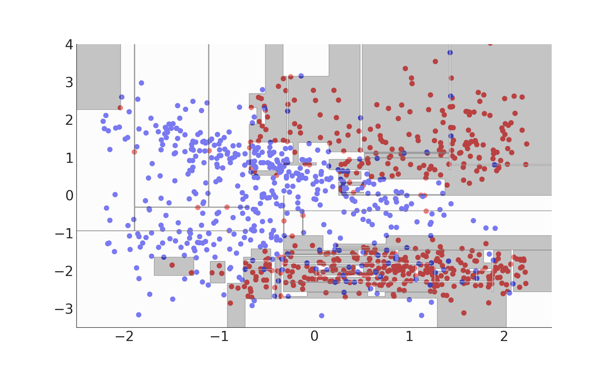
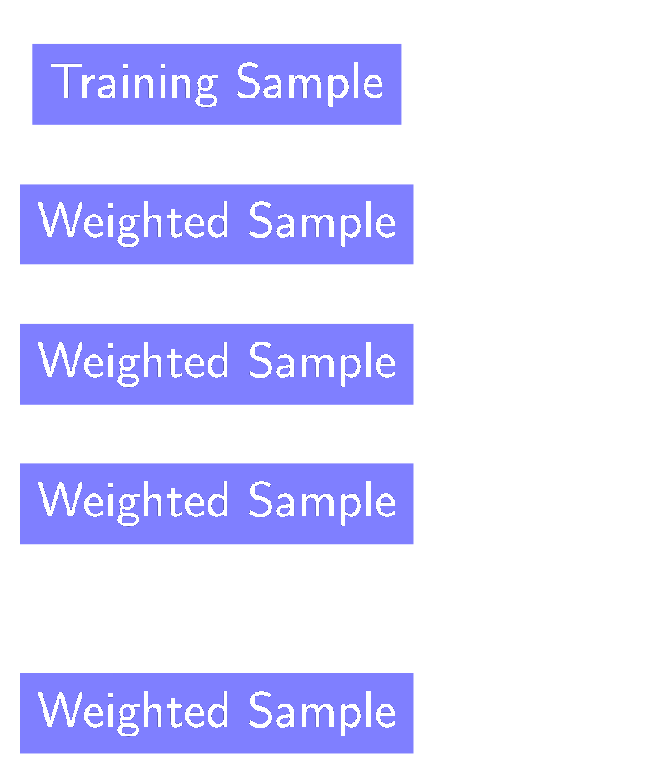
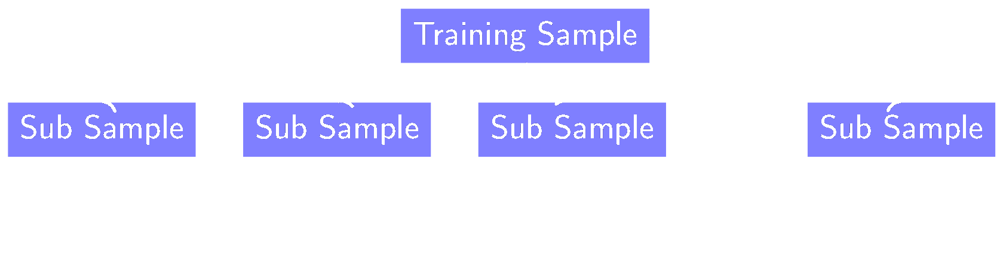
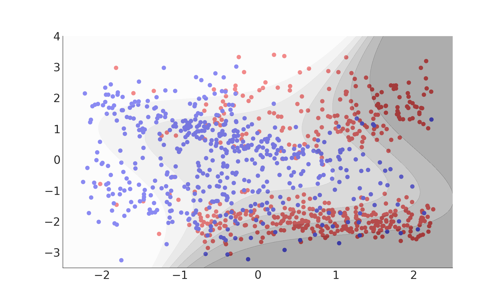
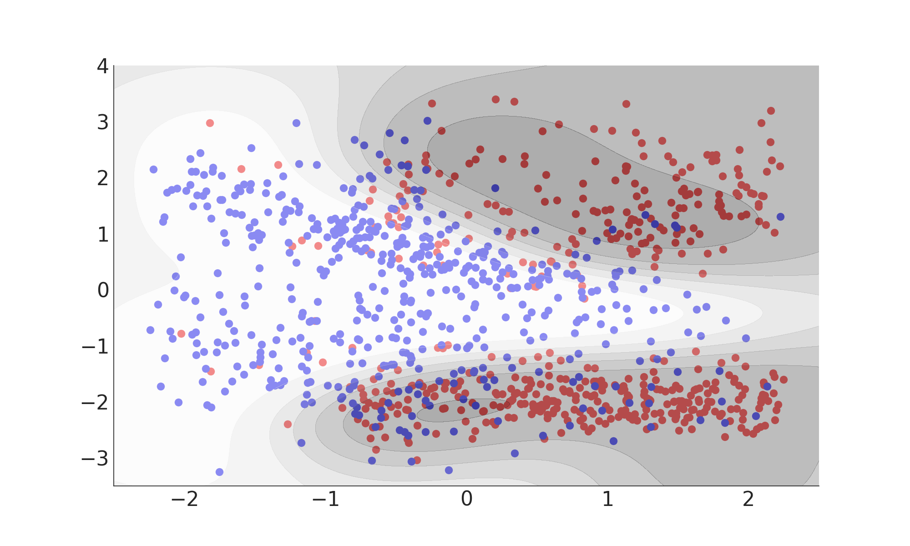

Machine Learning: An Introduction
Thomas Keck (thomas.keck2@kit.edu)
Japenese vs. Chinese
电
Chinese
Training / Fitting
Japanese (hiragana)
ま ち ね ら に ご
Chinese (kanji)
电 买 开 东 车 红 马
Application / Inference
の
Japanese (hiragana)
る
Japanese (hiragana)
热
Chinese (kanji)
时
Chinese (kanji)
な
Japanese (hiragana)
陸
Chinese (kanji)
Take a moment to appreciate what you just did
Let's build a machine that can do this!
 |
 |
 |
 |
Workflow
Multivariate Classification
Decision Tree & Model Complexity
Decision Tree (Inference)
Decision Tree (Fitting)
Decision Tree (Summary)
- Classifies using a number of consecutive rectangular cuts
- Each cut locally maximizes a separation gain measure
- Signal probability given by the purity in each leaf
- Interpretable (white box) model
from sklearn import tree
dt = tree.DecisionTreeClassifier(max_depth=4)
dt.fit(X, y)
dt.predict(X)
Model Complexity
 Misclassification Rate: 0%
Misclassification Rate: 21%
Overfitting
- Model is too complex
- Statistical fluctuations in the training data dominate predictions
- Model does not generalize → poor performance on new data
- Need to check for this on an independent test dataset!
Underfitting
- Model is too simple
- Relevant aspects of the data are ignored
Training vs. Test Error
Bias-Variance Dilemma
- Bias due to wrong modeling of the data (underfitting)
- Variance due to sensitivity to statistical fluctuations (overfitting)
- Irreducible error due to noise in the problem itself

Model Complexity
Number of Degrees of freedom (NDF) of the model(≈ number of parameters)
- Input dataset
- Reduce dimensionality
- Higher statistic
- Hyperparameters (control NDF)
- E.g. depth of the tree
- Optimized using search-algorithm
- Regularization (reduce effective NDF)
- E.g. Include tree structure in separation gain measure
- Ensemble methods
Model Complexity
(All you have to know)
Boosted Decision Tree & Ensemble Methods
Ensemble Methods
Average many simple models to obtain a robust complex model
$$ F\left( \vec{x} \right) = \sum_m \gamma_m f_m(\vec{x}) $$
Boosting
Boosting

- Reweight events w.r.t current prediction
- Individual classifiers are simple (weak-learners)
- Focus on events near the optimal separation hyper-plane
- Loss function L is crucial
- Least square → Regression
- Binomial deviance → GradientBoost Classification
- Exponential loss → AdaBoost classification
- Reweight events w.r.t current prediction
- Individual classifiers are simple (weak-learners)
- Focus on events near the optimal separation hyper-plane
- Loss function L is crucial
- Least square → Regression
- Binomial deviance → GradientBoost Classification
- Exponential loss → AdaBoost classification
Bagging
Bagging

- Use only a fraction of events / features per classifier
- Robustness against statistical fluctuations
- Embarrassingly parallel
- Sampling method is crucial:
- Bagging: random events with replacements
- Pasting: random events without replacement
- Random Subspaces: random features
- Bagging:random events with replacements
- Pasting:random events without replacement
- Random Subspaces:random features
Stochastic Boosted Decision Tree (Summary)
- Good out-of-the-box performance
- Robust against over-fitting
- Supports classification and regression
- Widely used in HEP
from sklearn import ensemble
bdt = ensemble.GradientBoostingClassifier(subsample=0.5,
max_depth=3,
n_estimators=50)
bdt.fit(X, y)
bdt.predict(X)
Further Ensemble Methods
Categorization
- Divide feature-space into sub-spaces
- Different behavior of the data in the chosen subspaces
- e.g. train separate classifiers for Barrel and Endcap
Combination
- Combine different classifiers
- Different regularization methods learn different aspects of the data
- e.g. combine neural network, BDT and SVM
Support Vector Machine & Kernel Trick
Support Vector Machine
Wikipedia
{kind=link}
Kernel Trick
- SVM Algorithm depends only on scalar product!
- Replace scalar product with an arbitrary kernel function
- Solves problem in implicitly high-dimensional space
Kernel Trick
$k(x_i, x_j) ) = (x_i \cdot x_j)^d$
 Misclassification Rate: 19%
$k(x_i, x_j) ) = \exp(-\gamma ||x_i \cdot x_j||^2)$
 Misclassification Rate: 15%
Support Vector Machine (Summary)
- Maximum margin classifier
- Quadratic problem: can be solved efficiently in $O(N^2)$
- Optimal for linearly separable problems
- Kernel trick allows solving of non-linear problems
- Solution depends only on the support-vectors
from sklearn import svm
svc = svm.SVC(kernel='rbf')
svc.fit(X, y)
svc.predict(X)
Artificial Neural Networks & Stochastic Gradient Descent
Artificial Neural Network
Universal Function Approximator
| Link | $\hat{=}$ | $w_{ij}$ |
| Neuron | $\hat{=}$ | $\sigma \left( \sum \dots \right)$ |
Backpropagation of Error
| Classification | $ \mathcal{L} = H\left(y, f(\vec{x})\right) $ |
| Regression | $ \mathcal{L} = \left( y - f(\vec{x}) \right)^2 $ |
Stochastic Gradient Descent
- Feed $N$ samples to the network ($N \hat{=} $ batch-size $\rightarrow$ stochastic)
- Calculate the gradientof the average loss with respect to each weight using the chain-rule of analysis
- Adjust the weights in the opposite direction (descent) with a small step-size (learning-rate) $\eta$
- Repeat until convergence
Selected Aspects of Training
- Stochastic gradient-descent
- Batch-size and Learning rate
- Momentum term
- Second Order: Hesse Matrix (BFGS)
- Regularization
- Early stopping
- Weight decay: $\alpha \sum |w|^2$
- Dropout (ensemble)
- Architecture
- Number of neurons
- Number of layers
- Activation function
- Loss function
- Initialization
- Distribution: Gaussian or Uniform
- Variance: Glorot, He
See Deep Learning Lecture
Artificial Neural Network (Summary)
- Universal function approximator
- Adjust weights to minimize loss-function
- Fast and small model
- Fitting can be challenging
- Ubiquitous in all modern ML applications
Misclassification Rate: 15.5%
from sklearn import neural_network
ann = neural_network.MLPClassifier(activation='tanh',
hidden_layer_sizes=(3,))
ann.fit(X, y)
ann.predict(X)
Generative Models & Neyman-Pearson Lemma
Neyman-Pearson Lemma
On the Problem of the most Efficient Tests of Statistical Hypotheses$$ f\left(\vec{x}\right) = \frac{\mathrm{PDF}\left( \vec{x} | \mathrm{S} \right)}{\mathrm{PDF}\left( \vec{x} | \mathrm{B} \right)} $$
By J. Neyman and E. S. Pearson
Most powerful test at a given significance level to distinguish between two simple hypotheses (signal or background)
Problem solved? No!
Signal and Background PDF are usually unknown
- High dimensional $\rightarrow$ cannot be sampled due to the curse of dimensionality
- Multiple sources for signal and background
- Mislabelled training data / Simulation uncertainties
Solution: Approximate Neyman-Pearson Lemma
- Neyman-Pearson Lemma
- Generative Models
- Analytical approx. (LDA, QDA)
- Kernel density estimator
- Gaussian mixture model
- Discriminative Models
- (Boosted) Decision Trees
- Support Vector Machines
- Artificial Neural Networks
Linear Discriminant Analysis
- Assumes conditional PDFs are normally distributed
- Assumes identical covariances
- Equivalent to Fisher’s discriminant
- Requires only means and covariances of sample
- Separating hyperplane is linear
$ f(x) = x^{\mathrm{T}} \cdot \Sigma^{-1} (\mu_{\mathrm{S}} - \mu_{\mathrm{B}}) $
Misclassification Rate: 24%
from sklearn import lda
ld = lda.LDA()
ld.fit(X, y)
ld.predict(X)
Quadratic Discriminant Analysis
- Assumes conditional PDFs are normally distributed
- Requires only means and covariances of sample
- Separating hyperplane is quadratic
$ f(x) = \frac{\sqrt{2 \pi | \Sigma_{\mathrm{B}} |} \exp\left( - \frac{1}{2} \left(x - \mu_{\mathrm{S}}\right)^{\mathrm{T}} \Sigma^{-1}_{\mathrm{S}} \left(x - \mu_{\mathrm{S}}\right) \right) }{ \sqrt{2 \pi | \Sigma_{\mathrm{S}} |} \exp\left( - \frac{1}{2} \left(x - \mu_{\mathrm{B}}\right)^{\mathrm{T}} \Sigma^{-1}_{\mathrm{B}} \left(x - \mu_{\mathrm{B}}\right) \right) }$
Misclassification Rate: 21%
from sklearn import qda
qd = qda.QDA()
qd.fit(X, y)
qd.predict(X)
Kernel Density Estimator
- Every training sample is replaced with a small gaussian sphere
- Bandwith (variance of gaussian) is key
- Works well for low dimensions
 Misclassification Rate: 16%
Misclassification Rate: 16%
from scipy.stats import gaussian_kde
signal = gaussian_kde(signal_samples)
background = gaussian_kde(background_samples)
Extensions & Multivariate Regression
(Generalized) Linear Regression
- Linear Regression of Base-Functions
- $y = \beta_0 + \beta_1 \phi_1(x_1) + \dots \beta_n \phi_n(x_n)$
- Fitted with least-square method
(Boosted) Decision Trees
- Various different algorithms exists
- Easiest: calculate average and right of each possible split points
- Minimize $\left(y - \bar{y}_{\mathrm{L}}\right)^2 + \left(y - \bar{y}_{\mathrm{R}}\right)^2$
Support Vector Regression
- Search for maximum-margin hyper-band incorporating all data-points
Artificial Neural Networks
- Neural Networks are still universal function approximators
- Loss function: $\left(y - f(\vec{x})\right)^2$
- Output activation function: linear
Summary
All concepts we encountered are still valid
- Model Complexity - Bias Variance Tradeoff
- Ensemble Methods - Boosting und Bagging
- SVM: Kernel Trick
- ANN: Stochastic Gradient Descent
Outlook & References
Outlook
There will be a second lecture on There will be workshop on